Analyze data from synthetic monitors¶
The Synthetics UI in Observability projects both provides a high-level overview of your service’s availability and allows you to dig into details to diagnose what caused downtime.
Overview¶
The Synthetics Overview tab provides you with a high-level view of all the services you are monitoring to help you quickly diagnose outages and other connectivity issues within your network.
To access this page in your Observability project, go to Synthetics → Overview.
This overview includes a snapshot of the current status of all monitors, the number of errors that occurred over the last 6 hours, and the number of alerts over the last 12 hours. All monitors created using a Synthetics project or using the UI will be listed below with information about the location, current status, and duration average.
When you use a single monitor configuration to create monitors in multiple locations, each location is listed as a separate monitor as they run as individual monitors and the status and duration average can vary by location.
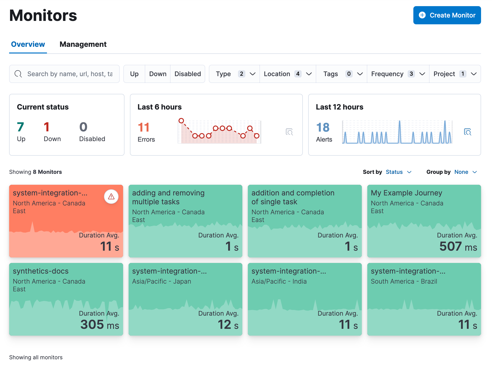
To get started with your analysis in the Overview tab, you can search for monitors or use the filter options including current status (up, down, or disabled), monitor type (for example, journey or HTTP), location, and more.
Then click an individual monitor to see some details in a flyout. From there, you can click Go to monitor to go to an individual monitor’s page to see more details (as described below).
All monitor types¶
When you go to an individual monitor’s page, you’ll see much more detail about the monitor’s performance over time. The details vary by monitor type, but for every monitor at the top of the page you’ll see:
The monitor’s name with a down arrow icon that you can use to quickly move between monitors.
The location of the monitor. If the same monitor configuration was used to create monitors in multiple locations, you’ll also see a down arrow icon that you can use to quickly move between locations that use the same configuration.
The latest status and when the monitor was last run.
The
Run test manually button that allows you to run the test on demand before the next scheduled run. This is only available for monitors running on Elastic’s global managed testing infrastructure. It is not available for monitors running on PRODUCT_NAMEs.
The
Edit monitor button that allows you to edit the monitor’s configuration.
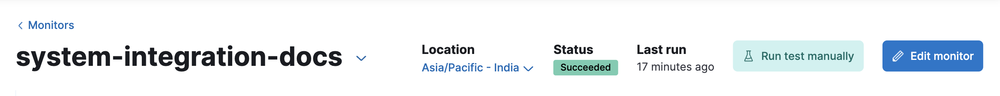
Each individual monitor’s page has three tabs: Overview, History, and Errors.
Overview¶
The Overview tab has information about the monitor availability, duration, and any errors that have occurred since the monitor was created. The Duration trends chart displays the timing for each check that was performed in the last 30 days. This visualization helps you to gain insights into how quickly requests resolve by the targeted endpoint and gives you a sense of how frequently a host or endpoint was down.
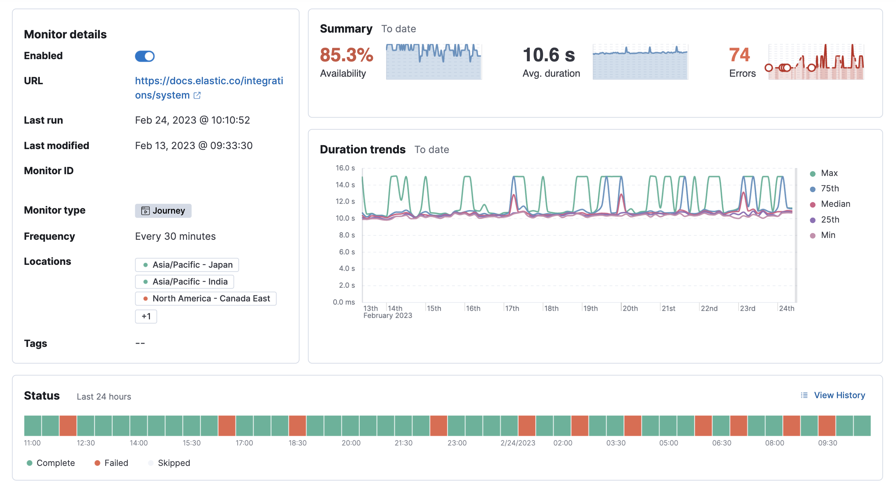
History¶
The History tab has information on every time the monitor has run.
It includes some high-level stats and a complete list of all test runs.
Use the calendar icon (
For browser monitors, you can click on any run in the Test runs list
to see the details for that run. Read more about what information is
included the in
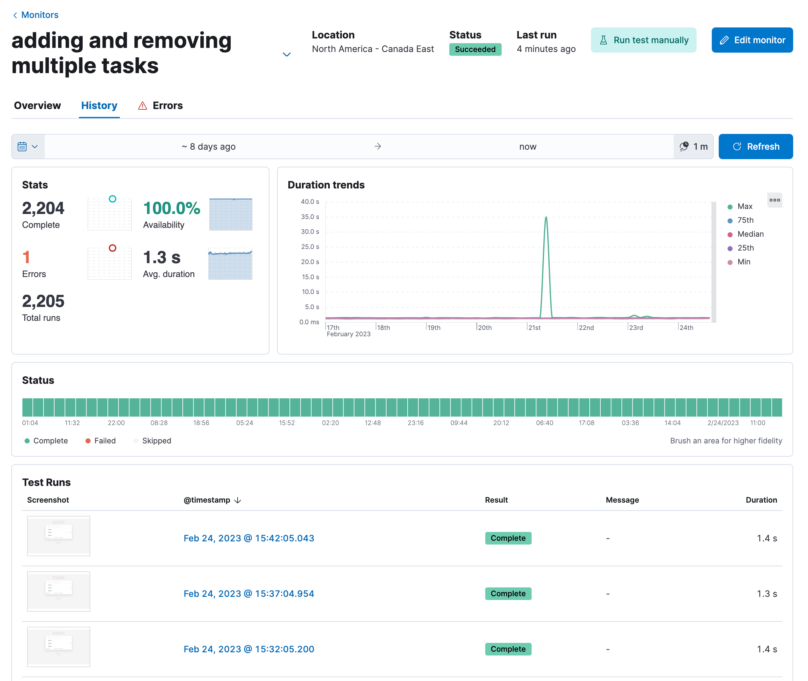
If the monitor is configured to
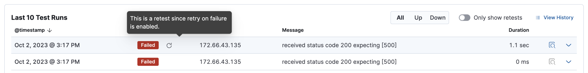
Errors¶
The Errors tab has information on failed runs.
If the monitor is configured to
The Errors tab includes a high-level overview of all alerts and a complete list of all failures.
Use the calendar icon (
For browser monitors, you can click on any run in the Error list
to open an Error details page that includes most of the same information
that is included the in
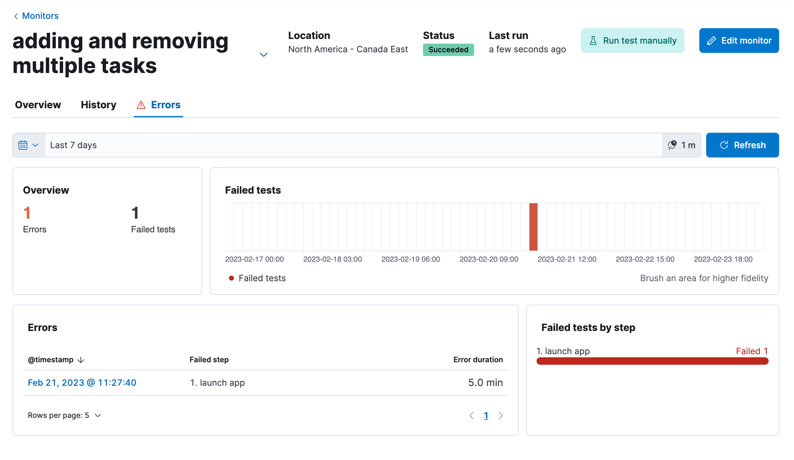
Browser monitors¶
For browser monitors, you can look at results at various levels of granularity:
See an overview of journey runs over time.
Drill down into the details of a single run.
Drill down further into the details of a single step within a journey.
Journey runs over time¶
The journey page on the Overview tab includes:
An overview of the last test run including high-level information for each step.
Alerts to date including both active and recovered alerts.
Duration by step over the last 24 hours.
A list of the last 10 test runs that link to the
details for each run .
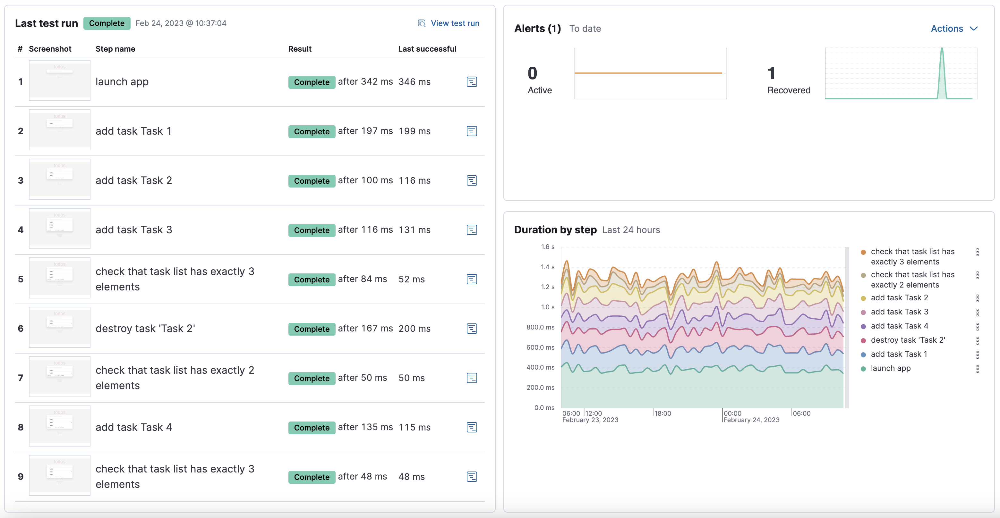
From here, you can either drill down into:
The latest run of the full journey by clicking
View test run or a past run in the list of Last 10 test runs. This will take you to the view described below in Details for one run .An individual step in this run by clicking the performance breakdown icon (
) next to one of the steps. This will take you to the view described below in Details for one step .
Details for one run¶
The page detailing one run for a journey includes more information on each step in the current run and opportunities to compare each step to the same step in previous runs.
At the top of the page, see the Code executed and any Console output for each step. If the step failed, this will also include a Stacktrace tab that you can use to diagnose the cause of errors.
Navigate through each step using
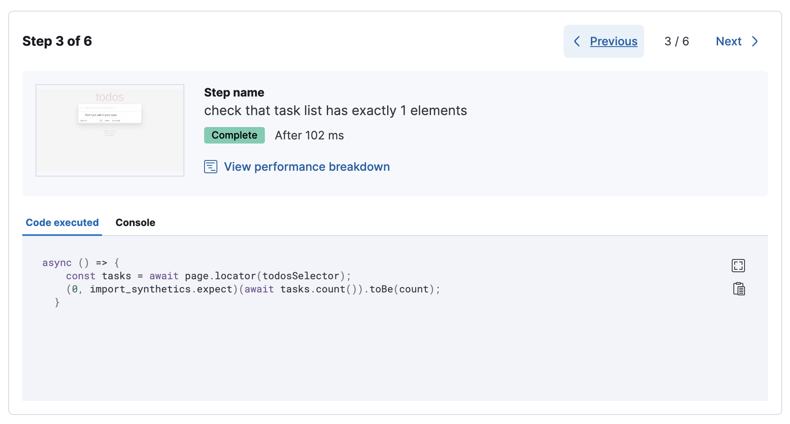
Scroll down to dig into the steps in this journey run.
Click the
This is particularly useful to compare the metrics for a failed step to the last time it completed successfully when trying to diagnose the reason it failed.
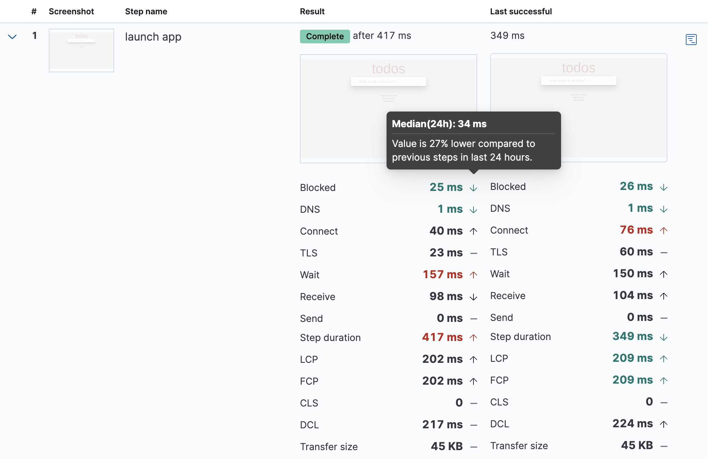
Drill down to see even more details for an individual step by clicking the performance breakdown icon
(
Details for one step¶
After clicking the performance breakdown icon (
Screenshot¶
By default the synthetics library will capture a screenshot for each step regardless of whether the step completed or failed.
Customize screenshot behavior for all monitors in the monitor.use
Screenshots can be particularly helpful to identify what went wrong when a step fails because of a change to the UI. You can compare the failed step to the last time the step successfully completed.
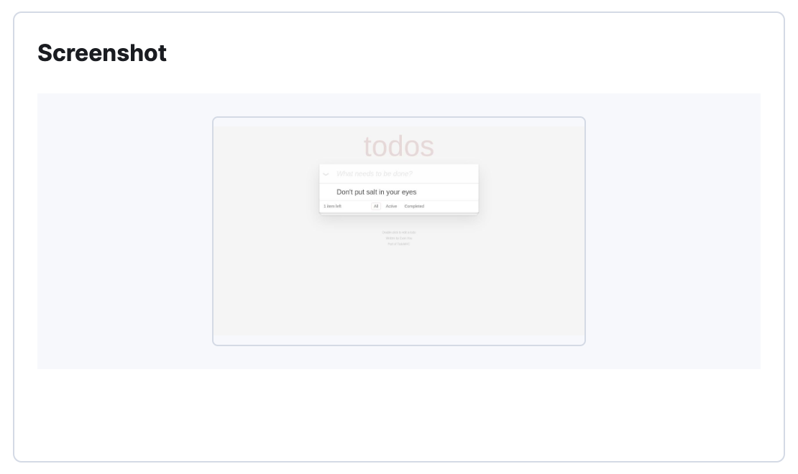
Timing¶
The Timing visualization shows a breakdown of the time spent in each part of the resource loading process for the step including:
Blocked: The request was initiated but is blocked or queued.
DNS: The DNS lookup to convert the hostname to an IP Address.
Connect: The time it took the request to connect to the server. Lengthy connections could indicate network issues, connection errors, or an overloaded server.
TLS: If your page is loading resources securely over TLS, this is the time it took to set up that connection.
Wait: The time it took for the response generated by the server to be received by the browser. A lengthy Waiting (TTFB) time could indicate server-side issues.
Receive: The time it took to receive the response from the server, which can be impacted by the size of the response.
Send: The time spent sending the request data to the server.
Next to each network timing metric, there’s an icon that indicates whether the value is
higher (
This gives you an overview of how much time is spent (and how that time is spent) loading resources.
This high-level information may not help you diagnose a problem on its own, but it could act as a
signal to look at more granular information in the
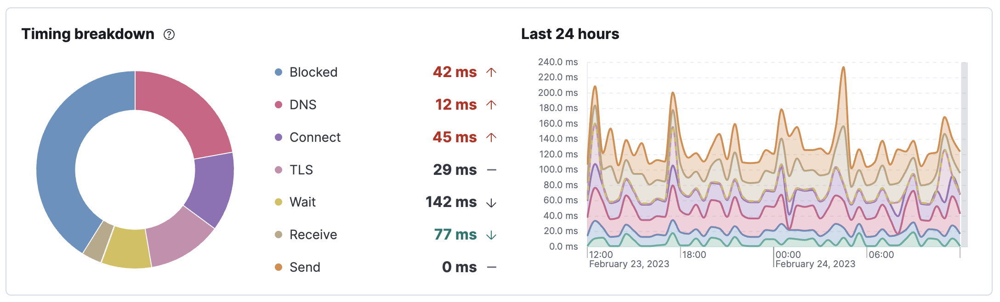
Metrics¶
The Metrics visualization gives you insight into the performance of the web page visited in the step and what a user would experience when going through the current step. Metrics include:
First contentful paint (FCP) focuses on the initial rendering and measures the time from when the page starts loading to when any part of the page’s content is displayed on the screen.
Largest contentful paint (LCP) measures loading performance. To provide a good user experience, LCP should occur within 2.5 seconds of when the page first starts loading.
Cumulative layout shift (CLS) measures visual stability. To provide a good user experience, pages should maintain a CLS of less than 0.1.
DOMContentLoadedevent (DCL) is triggered when the browser completes parsing the document. Helpful when there are multiple listeners, or logic is executed:domContentLoadedEventEnd - domContentLoadedEventStart.Transfer size represents the size of the fetched resource. The size includes the response header fields plus the response payload body.
Largest contentful paint and Cumulative layout shift are part of Google’s Core Web Vitals, an initiative that introduces a set of metrics that help categorize good and bad sites by quantifying the real-world user experience.
Next to each metric, there’s an icon that indicates whether the value is
higher (
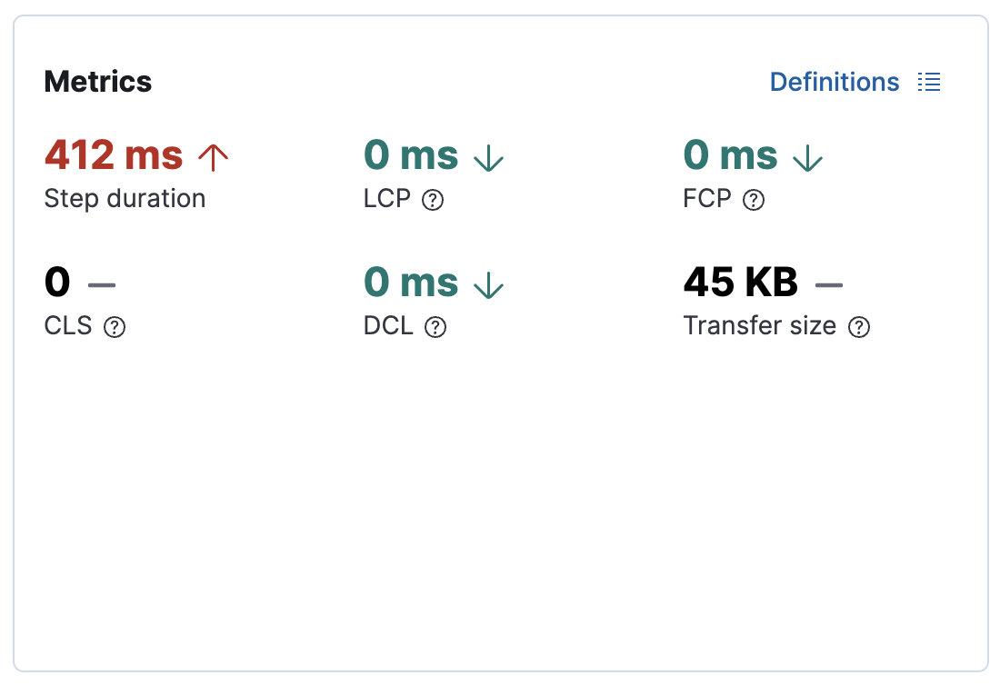
Object weight and count¶
The Object weight visualization shows the cumulative size of downloaded resources by type, and Object count shows the number of individual resources by type.
This provides a different kind of analysis. For example, you might have a large number of JavaScript files, each of which will need a separate download, but they may be collectively small. This could help you identify an opportunity to improve efficiency by combining multiple files into one.
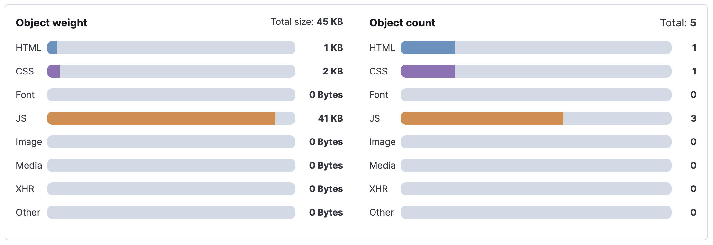
Network requests¶
The Network requests visualization is a waterfall chart that shows every request the page made when a user executed it. Each line in the chart represents an HTTP network request and helps you quickly identify what resources are taking the longest to load and in what order they are loading.
The colored bars within each line indicate the time spent per resource.
Each color represents a different part of that resource’s loading process
(as defined in the
Understanding each phase of a request can help you improve your site’s speed by reducing the time spent in each phase.
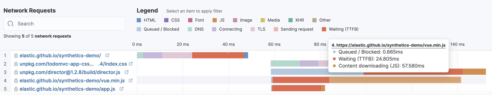
Without leaving the waterfall chart, you can view data points relating to each resource: resource details, request headers, response headers, and certificate headers. On the waterfall chart, select a resource name, or any part of each row, to display the resource details overlay.
For additional analysis, whether to check the content of a CSS file or to view a specific image,
click the
You can also navigate between steps and checks at the top of the page to view the corresponding waterfall charts.